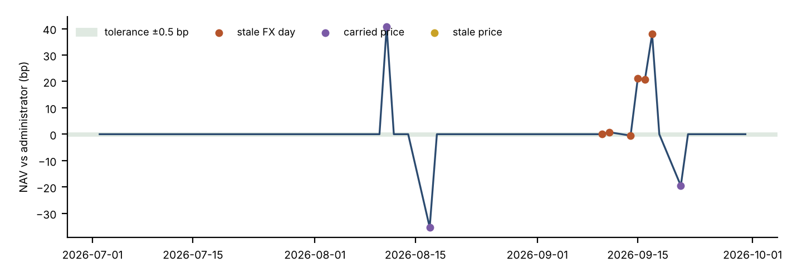

We rebuilt the daily data chain from six source systems, listed and private assets, into one governed platform and tested it against 156 known faults of 19 classes. Every one was found, with no false alarms. On 256 fund-days, our NAV differed from the administrator's by more than half a basis point on 35, by up to 51.2 bp (£108,608); every one of the 35 was traced to a named data fault, and 0 were unexplained. Position reconciliation surfaced 5 separate custodian breaks over 71 break-days, of which 3 are explained by a specific trade the custodian never booked.
| Finding | Size | Why it matters |
|---|---|---|
| Missing vendor prices, carried forward | 8 security-days | The holding is valued at an old price until the vendor catches up; the NAV looks normal. |
| Stale price (unchanged 6 days) and stale EUR/GBP rate (6 days) | 1 security; 1 pair | Looks like a valid price. The stale rate moved fund NAVs by up to 49.1 bp against the administrator. |
| Replayed OMS batches | 32 of 769 rows (4.2%) | Would double-count trades and create false breaks. Removed before any position is built. |
| Security that changed ISIN mid-period | 1 security; 90 custodian rows | A join on today's identifier loses every row sent under the old one. We join as of the date. |
| Identifier claimed by two securities | 1 SEDOL | Earliest claim wins; the later one is ignored and reported to the data owner. |
| Custodian vs OMS position breaks | 5 episodes, 71 break-days | 3 are one unbooked trade each; 1 position missing at the custodian; 1 unexplained difference that no trade accounts for. |
| Private markets: a capital-call notice never received | £808,263.77 | Found only by reconciling the GP's capital account to our notices; until it is obtained, that commitment's TVPI and IRR are wrong, so it is flagged unreconciled. |
| Private markets: lagged and stale NAVs, a secondary interest | 92 days; 3 stale quarters | Rolling the last statement forward still leaves an average 3.44% gap to true value; the secondary shows 1.55x on its price against 1.34x on the GP's inherited figures. |
| Invalid or duplicate insurer claims | 11 of 277 invalid (4.0%); 3 duplicates | Orphan claims, losses before inception, and reports before the loss would distort loss ratios. |

Our NAV minus the administrator NAV, in basis points of administrator NAV. Every excursion beyond tolerance coincides with a flagged carried price, stale price or stale FX day.
Claims pass three validation rules and de-duplication before reaching the marts; the illustrative loss ratios by product range from 36% to 78% (pro-rata earned premium, synthetic). Client names, e-mails, dates of birth and postcodes stay in a separate layer; analysts see a salted client key, an age band and a postcode district, filtered by region by role. The asset listing for the insurance account follows a Solvency II style but is illustrative, not a regulatory template.
Limits: single base currency (GBP), no subscriptions or redemptions, bonds without accrued interest, private-fund cashflows simplified (no recallable distributions or carried-interest waterfall); controls tuned to the fault classes planted here.